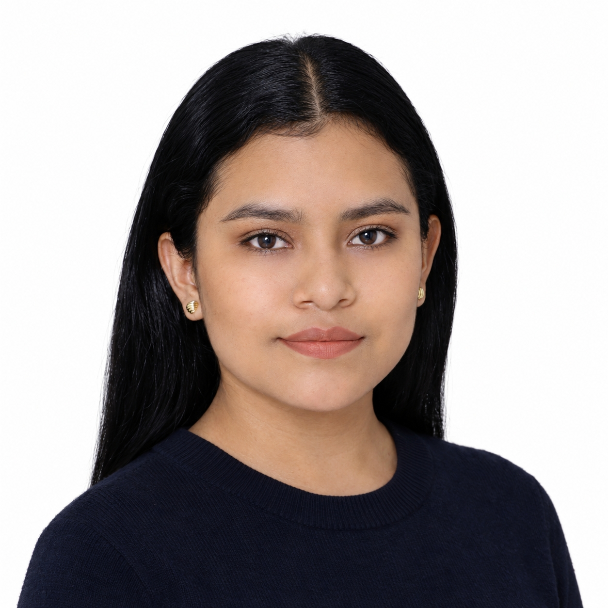
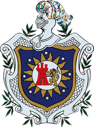
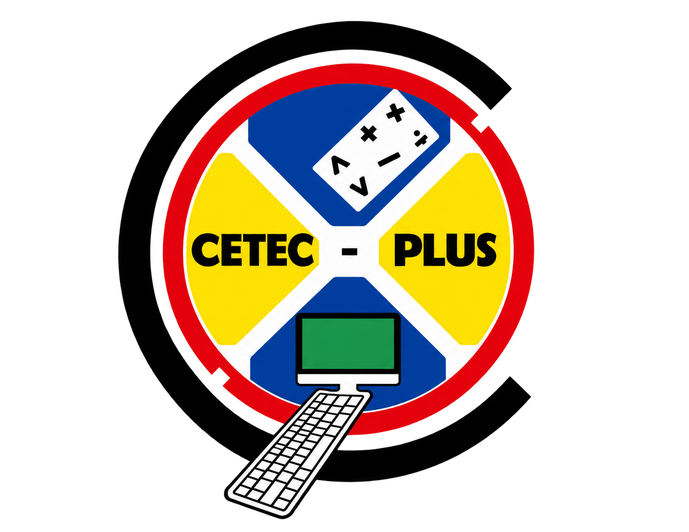
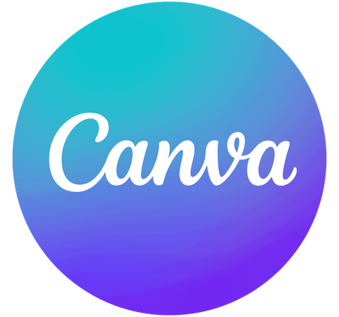

Education Sciences student, English major (UNAN-León), interested in language teaching and innovative learning strategies.

Tania Karina Alemán Díaz
Professional profile
Education
Bachelor's degree in Education Sciences, English major

National Autonomous University of Nicaragua, León (UNAN-León)
2023 – 2027 View degreeComplementary training

CETEC-PLUS
- Basic English
- Intermediate English
- Computer operator
- Advanced Excel
Skills
Teaching skills
- Lesson planning and delivery
- Design of listening, speaking, reading, and writing activities
- Development of teaching materials
- Communicative teaching strategies
- Assessment of learning
- Team leadership and coordination
Research skills
- Qualitative research
- Quantitative research
- Academic writing and style (APA)
Digital tools
Teaching materials
